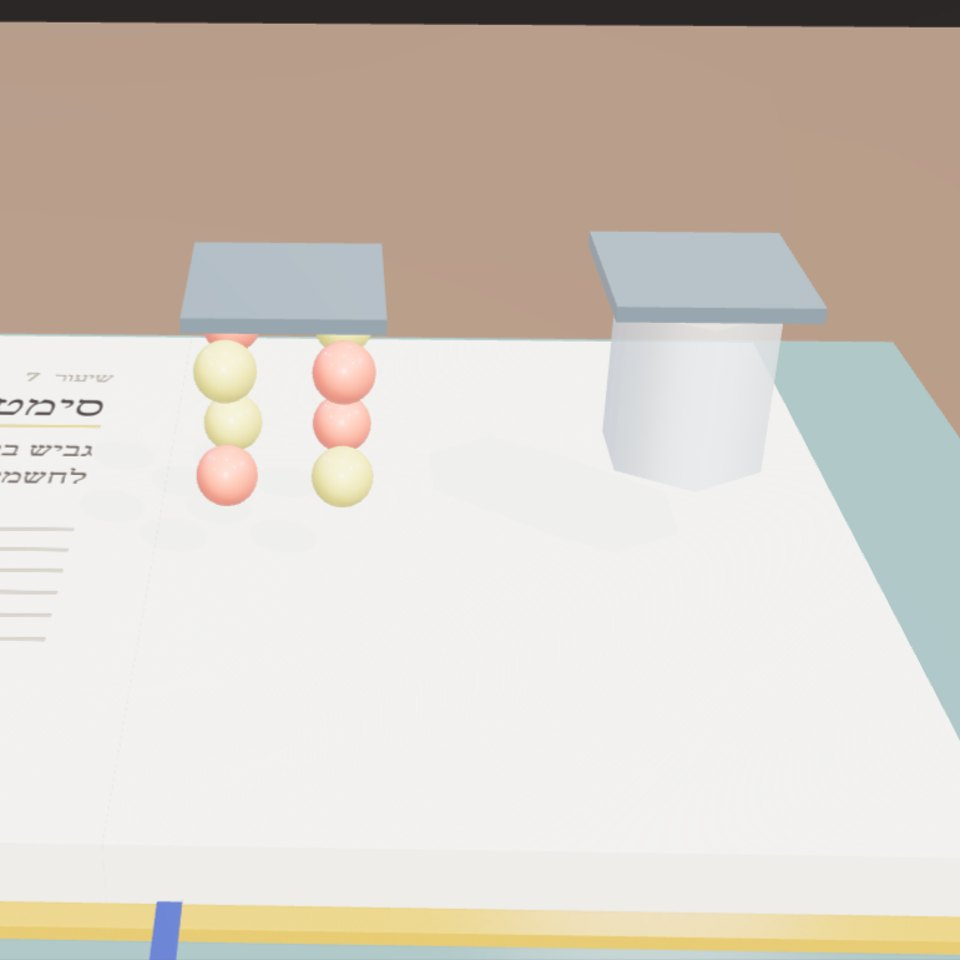

הדמיה · הדמיה: גביש סימטרי מול גביש לא סימטרי. רק השני מייצר חשמל בלחיצהטבלה מחזורית כרשת · תגלית 4
חומר קיים,תפקיד חדש
המכונה עברה על שמונה אתגרים מעולם הביומימטיקה וניסתה 3,458 רעיונות. כל התשובות הטובות היו חומרים שכבר נוצרו במעבדה. החידוש הוא בחיבור.
אד' ענת דוד שטיבלמן · עם המכונה של טבלה מחזורית כרשת
טבלה מחזורית כרשת · חומר קיים, תפקיד חדש1
01
קיים זה לא עובד
בניסיון הראשון, המכונה הציעה Br₂O₃ לקירור בניינים, כי הוא יציב בחישוב. אבל הוא לא מקרר.
מכאן נולד שער התפקוד: לכל אתגר, התכונה הפיזיקלית שקובעת אם החומר עושה את העבודה. פער אנרגיה לאור, סימטריה ללחץ, צפיפות לקלילות.
חומר שקיים הוא לא חומר שעובד.
02
ארבעה שערים
כל רעיון עובר ארבעה שערים: מטען, קיום, תפקוד ובטיחות.
מה שנשאר: ZnTe במקום CdTe לפאנל סולארי, בלי קדמיום. CeO₂ ליד TiO₂ לניקוי אוויר. BN ו-GaN לגביש שמייצר חשמל. MgB₄ ליד B₄C. SrCl₂ ליד CaCl₂ לייבוש.
כולם כבר נוצרו במעבדה. אף אחד מהם לא "חדש". החיבור לאתגר הוא החדש.
רוב ההמצאות השימושיות הן שילוב חדש של דברים קיימים.
יצירתיות היא פשוט חיבור בין דברים.סטיב ג'ובס (Steve Jobs), ראיון ל-Wired, פברואר 1996
הדמיה מספר החוקים של טבלה מחזורית כרשת.
טבלה מחזורית כרשת · חומר קיים, תפקיד חדש2
03
מבחן הגשם
גם שער הבטיחות נכשל בהתחלה. המכונה הציעה AlP לגביש שמייצר חשמל. אבל AlP משחרר במים גז פוספין רעיל, ומשמש כחומר הדברה.
עכשיו יש שער מים: חומר שמשחרר גז רעיל או דליק יוצא תמיד. תגובה מתונה עם מים מותרת רק כשהיא העבודה עצמה, כמו בלכידת פחמן.
בטיחות נבדקת בסביבה של החומר, לא רק ברשימת היסודות שלו.
אתגרים8
רעיונות שנבדקו3,458
שערים4
תשובות מהמעבדה8 מתוך 8
מה זה לא
אף אחד מהחומרים לא נבדק בתפקיד החדש שלו. התפקוד נבדק דרך תכונה מחושבת אחת. כל אחד מהם הוא מועמד לניסוי, לא פתרון.
טבלה מחזורית כרשת · חומר קיים, תפקיד חדש3
מה זה אומר לתכנון
- לפני שממציאים חומר: לחפש חומר קיים שאפשר להעביר לתפקיד.
- לכל תפקיד, להגדיר תכונה אחת שאפשר למדוד.
- לבדוק את החומר בסביבה שבה הוא יעבוד: גשם, שמש, לחות.
איזה חומר בבניין שלך היה עושה עבודה אחרת טוב יותר?
הייקו
אבן ישנה
במקום חדש בקיר
פתאום נושאת
מקורות
אתגרים ומקורות השראה: BIOMATIC, biomatic-weld.vercel.app
Materials Project, נתונים פתוחים (AWS Open Data), גרסה 2026-09-28
תגובה עם מים: Greenwood ו-Earnshaw, Chemistry of the Elements
מנוע: src/lib/nature.ts
התמונות שמסומנות "הדמיה" הן איורים תלת־ממדיים מספר החוקים של טבלה מחזורית כרשת. כל מספר בכתבה חושב במנועי האפליקציה, ונבדק מול מאגר התרכובות ומול חישובי Materials Project.
הגוונים יורדים מבהיר לכהה בקפיצה אחת באמצע, כמו המעבר מטבע לחומר. רוחב התמונה הוא חתך הזהב של רוחב הדף.
https://tavla-machzorit.vercel.app/#/nature
טבלה מחזורית כרשת · חומר קיים, תפקיד חדש4